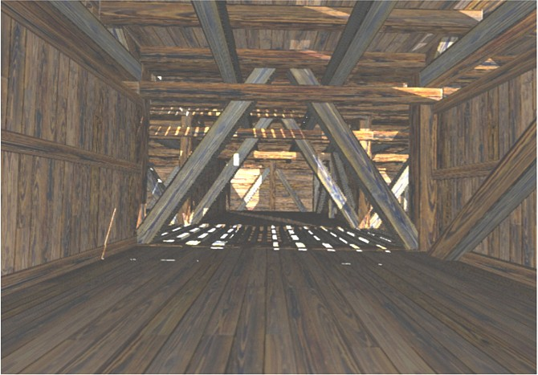

TIM LOVETT MAY 2004
Image Tim Lovett May 2004, photo Tim Lovett, original ark texture Rod Walsh.
Noah's Ark shown to scale in Sydney Harbour. This ark is 150m long using the Babylonian cubit.
The cruise ship behind it is almost identical in size to the Titanic. The P&O Pacific Sky was in Darling Harbour Sydney, May 21 2004. It carries 1550 passengers, 11 decks, 240 m long, 46000 gross tonnes, max speed 21 knots, and was built in 1984.

Unbelievable! It a good thing we had the camera ready or no one would have believed the story. The Pacific Sky slips past the ark as revelling partygoers strain to get a better view. The Sydney Harbour Bridge is just visible above the ship. Of course, there's no real ark like this around today. The first problem is finding the wood. Next you have to interbreed the animals back to the way they were 4500 years ago before so many of them got narrowed down and speciated like a bunch of sickly pedigree poodles. Lastly, there needs to be a market for a window limited poorly streamlined vessel with no propulsion designed for a flood that won't come again. Still...it would be rather cool, don't you think?
OTHER IMAGES
Slatted Flooring. View looking across the ark on the second level. The level above has slatted flooring in the corridor to pass light though. Ignore the ceiling, it's wrong now.
